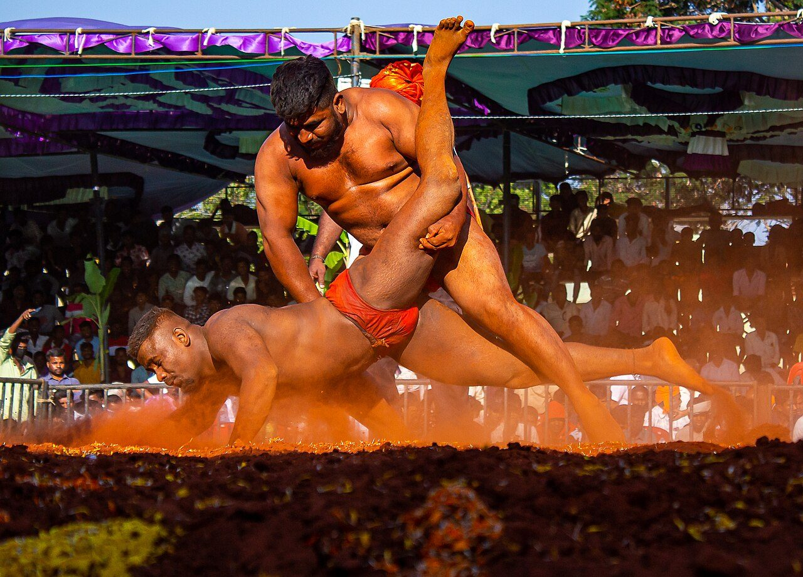

Chapter 14: Mallayuddha and Kuśtī: Wrestling and Unarmed Combat¶
14.1 Introduction¶
Wrestling is the most widespread and the best documented of India’s traditional combat arts. It appears in the epics as the art of heroes, in medieval courts as a royal entertainment, in the gymnasia of towns and villages as a training for soldiers and a discipline for young men, and in the modern world as both a living folk tradition and an Olympic sport in which Indian athletes have won many medals. This chapter traces its history, describes the institution of the akhāṛā and the culture of the wrestler (pahalvān), discusses related arts such as the armed boxing called vajramuṣṭi and the pole-gymnastics called mallakhamb, and considers the traditional knowledge of the body’s vulnerable points (marma). Joseph Alter’s ethnography of North Indian wrestling, The Wrestler’s Body, is the fundamental modern study (Alter 1992).
14.2 Wrestling in Early Literature¶
14.2.1 The epics¶
The Sanskrit word for wrestler is malla, and wrestling is mallayuddha or niyuddha. The Mahābhārata contains several wrestling bouts. The most famous is the fight between Bhīma and Jarāsandha, king of Magadha, in the Sabhāparvan: the two fight for many days and nights until Bhīma, at Kṛṣṇa’s hint, tears his opponent in two. In the Virāṭaparvan, Bhīma, disguised as a cook at the court of King Virāṭa, defeats a champion wrestler at a festival and later kills the general Kīcaka with his bare hands (Buitenen 1973–1978; Hopkins 1889). In the stories of Kṛṣṇa told in the Harivaṃśa and the Purāṇas, the young Kṛṣṇa and his brother Balarāma kill the champion wrestlers Cāṇūra and Muṣṭika in the arena of the tyrant Kaṃsa at Mathurā. These narratives present wrestling as a heroic and royal art, and they made Bhīma, Balarāma and Kṛṣṇa patrons of wrestlers.
14.2.2 Early historic evidence¶
Buddhist and Jain texts mention wrestlers and wrestling matches at festivals, and the name Malla was borne by one of the republican peoples of north Bihar in the Buddha’s time, though the connection with wrestling is uncertain. Sculpture of the early centuries CE occasionally shows wrestlers, and Tamil Caṅkam poetry refers to wrestlers and contests of strength. Claims that particular Harappan seals or figurines depict wrestlers are speculative.
14.3 Medieval Wrestling¶
14.3.1 The Mānasollāsa¶
The most detailed early account of Indian wrestling is in the Mānasollāsa, the encyclopaedia compiled for the Cāḷukya king Someśvara III around 1129–1131 (Shrigondekar 1925–1961). Its section on the recreation of wrestling (mallavinoda) describes how the king should maintain wrestlers, classifying them by age and strength; how they should be fed, with milk, meat, ghee and other strengthening foods; their daily exercises; the arena in which they fight; and the conduct of bouts before the king, with holds and throws, rules of victory and the rewards for winners. It shows that by the twelfth century wrestling was an established courtly institution in the Deccan, with professional wrestlers supported by royal patronage.
14.3.2 The Jyeṣṭhīmallas and the Malla Purāṇa¶
In western India, a community of hereditary wrestlers called Jyeṣṭhīmallas (Gujarati Jeṭhīs) claimed brahmin status and maintained a tradition of wrestling and of vajramuṣṭi, a form of combat with a knuckle-weapon. The Malla Purāṇa, a Sanskrit text associated with this community, describes its origins and customs, the training of wrestlers, their diet and exercises, and the conduct of bouts. Its date is uncertain; it is generally regarded as a medieval work. The Jyeṣṭhīmallas served Rajput and Maratha courts in Gujarat and Rajasthan and later the court of Mysore, where wrestlers of this community still performed in the early twentieth century (Mujumdar 1950; Green and Svinth 2010).
Modern books on Indian wrestling often describe four classical styles, named after the epic and mythological heroes Hanumān, Jāmbavān, Jarāsandha and Bhīma, each with a characteristic emphasis — technique, holds, joint-breaking or strength. The source of this classification is unclear; it appears in modern writing but is not found in the Mānasollāsa, and it should be treated as a modern scheme rather than a classical one.
14.3.3 Vajramuṣṭi¶
Vajramuṣṭi (“thunderbolt fist”) was a combat sport in which the fighters wore on one hand a knuckle-weapon of horn, ivory or metal, sometimes with projecting points, and struck and grappled until blood was drawn or a fighter was disabled. It was associated with the Jyeṣṭhīmallas and was performed at courts as a spectacle. Portuguese visitors to Vijayanagara in the early sixteenth century describe bloody wrestling and fighting contests at the Mahānavamī festival, which may have been of this kind. The art had become rare by the twentieth century (Green and Svinth 2010), though short ritual bouts are still staged by wrestlers of the Jetti community at the Mysore Dasara.
14.3.4 Persian wrestling and the Mughal court¶
The arrival of Turkic and Persian elites from the eleventh century brought the Persian tradition of wrestling, with its heroic ideal of the pahlavān and its training house, the zūrkhāna. The words kuśtī (wrestling) and pahalvān (wrestler) are Persian. In India the Persian and Indian traditions merged. The Mughal emperors maintained wrestlers at court; the Āʾīn-i Akbarī lists wrestlers from Persia and Turan alongside Indian wrestlers and the fighters called mal, and describes their pay and their contests (Blochmann 1873). In the eighteenth and nineteenth centuries, the courts of Lucknow, Patiala, Kolhapur, Baroda, Indore, Datia and other states were great centres of patronage, and wrestlers of all communities, Hindu and Muslim, competed for princely support.
14.4 The Akhāṛā¶
14.4.1 Space and ritual¶
The akhāṛā (or akhāḍā) is the North Indian wrestling ground and gymnasium. Its centre is a pit of soft, carefully prepared earth (Figure 14.1), dug and turned daily, mixed with substances such as oil, buttermilk and turmeric and kept free of stones. Around it are spaces for exercise, a well or water supply, and usually a shrine to Hanumān, the monkey-god of the Rāmāyaṇa, who embodies strength, celibacy and devotion and is the patron of wrestlers. Before training, wrestlers worship Hanumān and touch the earth of the pit with reverence; the earth itself is regarded as sacred and beneficial to the body (Alter 1992).


The akhāṛā is presided over by a master (guru or ustād), whose authority extends over the wrestlers’ training, diet and conduct. Alter’s fieldwork in Banaras in the 1980s showed that the akhāṛā was not merely a sports club but a moral community, in which young men were taught an ideology of self-discipline, devotion and service, and in which wrestling was understood as a way of life as well as a sport (Alter 1992).
14.4.2 The wrestler’s regimen¶
The traditional wrestler’s life is governed by a strict regimen. He rises early, exercises for hours, wrestles, bathes, eats a large and carefully chosen diet, rests, and trains again in the evening. The characteristic exercises (vyāyām) include the daṇḍ, a flowing push-up, and the baiṭhak, a deep knee-bend, performed in hundreds or thousands of repetitions; the swinging of heavy wooden clubs (jorī, mugdar) and the stone or iron mace (gadā); rope-climbing; and the turning of the earth of the pit. Indian club-swinging was adopted by British soldiers in India in the nineteenth century and spread to Britain and America as a form of gymnastics.
The diet traditionally emphasises milk, ghee, almonds and other foods believed to build strength, with vegetarian and non-vegetarian variants. Wrestlers are expected to practise celibacy (brahmacarya), in the belief that the conservation of semen builds strength and vitality; Alter discusses this belief and its place in the wrestler’s ideology (Alter 1992). It is a traditional belief, not an established physiological fact.
14.4.3 The bout¶
A traditional bout is fought on the earth by two wrestlers wearing a loincloth (laṅgoṭ), and is won by pinning both of the opponent’s shoulders to the ground (cit). There are many named holds and throws, such as the dhobīpāṭ (a shoulder throw, “washerman’s throw”) and the kalājaṅg; the names and techniques vary by region and lineage. Bouts are held at tournaments (daṅgal), often attached to festivals and fairs and sponsored by local patrons; the winner of a major tournament may receive a title, a mace, money or a turban.
14.5 A Vocabulary of the Akhāṛā¶
Table 14.1 explains some of the Hindi and Urdu terms of north Indian wrestling used in this chapter, largely following the usage recorded by Alter (Alter 1992).
| Term | Meaning |
|---|---|
| akhāṛā | Wrestling ground and the community that trains there |
| pahalvān | Wrestler |
| guru, ustād, khalīfā | Teacher; senior master |
| kuśtī | Wrestling (from Persian) |
| daṅgal | Wrestling tournament |
| dāṅv | A move or hold; the repertoire of techniques |
| jōṛ | Sparring practice with a partner |
| daṇḍ | Dipping push-up exercise |
| baiṭhak | Deep knee-bend exercise |
| jōṛī, mugdar | Heavy wooden clubs swung for strength |
| gadā | Mace, swung in exercise; emblem of Hanumān |
| nāl | Heavy stone ring lifted in exercise |
| laṅgoṭ | Loincloth worn in training and bouts |
| mālish | Massage, part of the daily regimen |
14.6 Modern Wrestlers¶
14.6.1 Gama and the international stage¶
In the early twentieth century Indian wrestlers made their mark internationally. The most famous was Ghulam Muhammad, known as Gama (c. 1878–1960), wrestler to the Maharaja of Datia and later of Patiala, who was widely regarded as unbeatable. In London in 1910 he wrestled the Polish champion Stanisław Zbyszko; the long match was declared a draw, and when Zbyszko failed to appear for the deciding bout, Gama was awarded the title. In 1928, at Patiala, he defeated Zbyszko in a rematch within a minute. His career, and those of other Indian wrestlers who toured Europe, gave Indian wrestling an international reputation. After 1947 Gama lived in Pakistan; the wrestling traditions of Punjab are shared by both countries.
14.6.2 Olympic wrestling¶
Indian wrestlers adapted to the international freestyle style. Khashaba Dadasaheb Jadhav won a bronze medal at the 1952 Helsinki Olympics, the first individual Olympic medal won by independent India. In the twenty-first century Indian wrestlers, many of them trained in traditional akhāṛās in Haryana, Delhi and Uttar Pradesh before moving to the mat, have won a series of Olympic medals since 2008, and women’s wrestling has grown rapidly (Section 14.11). Table 14.2 lists the Olympic medals won by Indian wrestlers up to 2024; most of the medallists began their careers in traditional akhāṛās before turning to freestyle wrestling on the mat.
The shift from earth to mat has changed the traditional institution. Many akhāṛās have added mats and modern training methods, and some traditional wrestlers regret the decline of the earthen pit and of the ideology of the pahalvān. Alter’s later work and the experience of the wrestlers themselves show a living tradition negotiating between continuity and change.
| Games | Wrestler | Medal |
|---|---|---|
| 1952 Helsinki | Khashaba Dadasaheb Jadhav | Bronze, freestyle bantamweight; independent India’s first individual Olympic medal |
| 2008 Beijing | Sushil Kumar | Bronze, freestyle 66 kg |
| 2012 London | Sushil Kumar | Silver, freestyle 66 kg |
| 2012 London | Yogeshwar Dutt | Bronze, freestyle 60 kg |
| 2016 Rio de Janeiro | Sakshi Malik | Bronze, women’s freestyle 58 kg; first by an Indian woman wrestler |
| 2020 Tokyo (held 2021) | Ravi Kumar Dahiya | Silver, freestyle 57 kg |
| 2020 Tokyo (held 2021) | Bajrang Punia | Bronze, freestyle 65 kg |
| 2024 Paris | Aman Sehrawat | Bronze, freestyle 57 kg |
14.7 Princely Patronage and Famous Wrestlers¶
In the late nineteenth and early twentieth centuries, the princely states were the great patrons of Indian wrestling. Maharajas maintained wrestlers, paid for their diet and training, and organised great tournaments at which champions from across India competed for prizes and titles. Kolhapur, under Shāhū Mahārāj (r. 1894–1922), was a particularly important centre: the ruler, a keen supporter of wrestling and of the non-Brahmin movement, built a large wrestling stadium, and Kolhapur remains a centre of wrestling in Maharashtra. Patiala, Baroda, Indore, Datia, Gwalior and the courts of Punjab and Rajasthan were also important patrons (Alter 1992; Mujumdar 1950).
Wrestlers became popular heroes. Besides Gama, the most famous were his brother Imām Bakhsh; Ghulām of Amritsar, who toured Europe at the turn of the twentieth century; and Gobar Goho (Jatindra Charan Guha) of Calcutta, who wrestled professionally in the United States in the early 1920s and was billed there as a world champion in the light-heavyweight class. In independent India, Dārā Singh (1928–2012) became famous first as a wrestler in the professional circuit and then as a film actor, playing among other roles the god Hanumān in a television serial of the Rāmāyaṇa.
14.8 Wrestling Titles and Tournaments¶
Wrestling culture is organised around tournaments and titles. At the village and district level, daṅgals are held at fairs, festivals and the anniversaries of saints and gods, often sponsored by local notables or politicians; spectators contribute prize money, and the bouts are accompanied by drums and commentary. At higher levels, titles such as Rustam-i Hind (“Rustam of India”, after the hero of the Persian epic), Bhārat Kesarī and Hind Kesarī (“lion of India”) and, in Maharashtra, Mahārāṣṭra Kesarī (“lion of Maharashtra”) are awarded to the winners of major championships. These titles carry great prestige in rural society, and successful wrestlers often become local leaders. Alter’s work describes how the ideology of the akhāṛā links personal discipline, the health of the body and the health of the nation in the thought of modern Indian wrestlers (Alter 1992).
14.9 Physical Culture and the Gymnasium¶
The North Indian akhāṛā had counterparts throughout India: the Marathi tālīm, the gymnasia (vyāyāmśālā) of the physical culture movement, and the clubs founded by nationalists in Bengal and Punjab. In the late nineteenth and early twentieth centuries a number of physical culturists systematised Indian exercises, combining the daṇḍ, baiṭhak, club-swinging, mallakhamb and wrestling with European gymnastics and bodybuilding. In Baroda the physical culturist Manikrao and his circle, and later D. C. Mujumdar, whose Encyclopedia of Indian Physical Culture (1950) recorded many exercises and martial arts, were influential (Mujumdar 1950). In the same period the bodybuilder Eugen Sandow toured India (1904–5), and the ideal of the muscular, disciplined body spread through schools and clubs. Mark Singleton has shown that this movement also shaped the modern practice of postural yoga (Singleton 2010).
14.10 Wrestling, Religion and Community¶
Wrestling in north India has long crossed religious boundaries. The akhāṛā’s patron is Hanumān, and its rituals are Hindu, but many of the most famous wrestlers and masters of the nineteenth and twentieth centuries were Muslims, among them Gama and his brother Imām Bakhsh, and Muslim wrestlers had their own patron saints and rituals. Hindu and Muslim wrestlers trained in the same styles, competed in the same tournaments and were patronised by the same princes; wrestling lineages (gharānā) sometimes included members of both communities. Alter describes how the wrestler’s ideology, centred on the discipline of the body, celibacy and devotion, could be shared across religious lines, even as it was expressed in Hindu terms in the Banaras akhāṛās he studied (Alter 1992). The partition of India in 1947 divided the great wrestling centres of Punjab between India and Pakistan, and Pakistani wrestlers continued the traditions of Gama’s family.
Wrestling also had a place in the culture of particular castes and communities. In north India, Yādav (Ahīr) and Jāṭ communities, among others, have strong wrestling traditions, and in Maharashtra wrestling is closely associated with the rural Marāṭhā and other peasant communities. The akhāṛā could be a site of caste and community identity, but also, especially in towns, a place where young men of different backgrounds trained together under a common discipline.
14.11 Women’s Wrestling¶
Until recently, wrestling in India was an almost exclusively male activity, and the ideology of the akhāṛā, with its emphasis on celibacy and the avoidance of women, excluded them. A few women wrestlers performed exhibition bouts, often against men, and attracted great curiosity; the best remembered is Hamida Banu, who in the 1950s challenged male wrestlers to bouts, although her career is known mainly from newspaper reports and later retellings rather than from any study. The entry of women’s wrestling into the Commonwealth Games and Olympic Games at the beginning of the twenty-first century changed the situation. In Haryana, Mahavir Singh Phogat trained his daughters as wrestlers against strong social disapproval, and their success — Geeta Phogat won the Commonwealth Games gold medal in 2010, and several of her sisters and cousins also won international medals — encouraged many other families, and the film Dangal (2016) made their story widely known. Sakshi Malik’s Olympic bronze medal in 2016 and the success of Vinesh Phogat confirmed the place of women in Indian wrestling. Indian women wrestlers’ public protests in 2023 over allegations of sexual harassment against the president of the national wrestling federation drew national attention to the conditions of women in the sport.
14.12 Mallakhamb¶
Mallakhamb (“wrestler’s pole”) is a form of gymnastics performed on a vertical wooden pole, or on a hanging rope or cane, in which the athlete climbs, balances and holds postures. It was originally a training exercise for wrestlers, developing grip and strength for holds. Maharashtrian tradition attributes its systematisation to Bāḷambhaṭṭadādā Deodhar, a wrestling master in the service of the Peshwa Bājīrāv II in the early nineteenth century (Mujumdar 1950). In the late nineteenth and early twentieth centuries mallakhamb was taken up by the physical culture movement in Maharashtra and became a school and club sport. It is today a competitive sport with national championships, and was declared the state sport of Madhya Pradesh.
14.13 Regional Wrestling Traditions¶
Many regions have their own styles of wrestling. In Manipur, mukna is a belt-wrestling style practised by the Meitei, with ritual associations and competitions at festivals. In Mizoram, inbuan is a traditional wrestling in which competitors grip a belt and try to lift the opponent off his feet within a circle. In Kerala and the coastal Karnataka region, forms of belt-wrestling were also practised. Punjab has its own styles of open wrestling and of kabaḍḍī, a team game of tag and wrestling now played internationally. These regional forms deserve fuller study; their histories are mostly undocumented before the twentieth century.
14.14 Kabaḍḍī¶
Kabaḍḍī is a team game of tag and wrestling played across South Asia under many local names. A raider from one team crosses into the opponents’ half, holding his breath and chanting “kabaḍḍī” to show that he has not taken a new breath; he tries to touch one or more opponents and return to his own side, while the defenders try to hold him until his breath runs out. The game requires agility, strength and wrestling skill, and it was traditionally played in villages without equipment. Its origins are unknown; claims that it is mentioned in the epics are speculative. In the twentieth century it was standardised, with national rules adopted in the 1950s; it became an Asian Games sport in 1990, and the professional Pro Kabaddi League, launched in 2014, has made it one of the most watched sports in India. Punjab has its own “circle” style of kabaḍḍī, popular also in the Punjabi diaspora.
14.15 Striking and Vital Points¶
14.15.1 Unarmed striking arts¶
Alongside wrestling, India had unarmed striking arts. Muṣṭiyuddha, “fist-fighting”, is mentioned in Sanskrit literature, and vajramuṣṭi combined striking and grappling. In the Tamil country, kuttu varisai (“sequences of blows”) is an unarmed art related to silambam; in Kerala, kaḷarippayaṟṟu includes unarmed techniques (Chapter 15). Many of these arts teach that blows to particular points of the body are especially dangerous.
14.15.2 Marma in Āyurveda¶
The idea of vital points (marma) comes from Indian medicine. The surgical treatise Suśruta Saṃhitā enumerates 107 marmas, sites where flesh, vessels, ligaments, bones and joints meet, injury to which is dangerous. It classifies them by structure and by the consequence of injury, as shown in Table 14.3. The purpose of the classification was surgical: the physician needed to know which parts of the body to avoid in operations and which wounds were most dangerous.
| Class | Consequence of injury | Number |
|---|---|---|
| sadyaḥprāṇahara | Death soon after injury | 19 |
| kālāntaraprāṇahara | Death after an interval | 33 |
| viśalyaghna | Death when the embedded object is removed | 3 |
| vaikalyakara | Disability | 44 |
| rujākara | Pain | 8 |
| Total | 107 |
14.15.3 Marma and varmam in the martial arts¶
The martial arts of Kerala and Tamil Nadu developed their own traditions of vital points: marmmam in kaḷarippayaṟṟu and varmam in the Tamil art of varmakkalai, which is linked to the Siddha medical tradition. Their lists of points differ from Suśruta’s and from each other. Teachers of these arts claim that knowledge of the points can be used both to disable an opponent and to heal injuries and illnesses through massage and manipulation. Phillip Zarrilli’s study of kaḷarippayaṟṟu describes this dual tradition, in which the master (gurukkaḷ) was also a healer, and the secrecy with which knowledge of the points was guarded (Zarrilli 1998).
Modern promotional writing often claims that the vital points correspond to specific nerves or arteries and that neuroscience has “confirmed” the effects described by tradition. Such claims are not supported by published scientific research. Some vital points do lie over vulnerable structures — the temple, the throat, the groin — and blows to them can be dangerous, as anyone would expect; but the traditional systems of points, their effects and their remedies have not been validated as medical knowledge.
Health and Safety Note
This chapter describes vital-point traditions historically. It does not give, and should not be used as, instruction in striking the body. Blows to the head, neck, chest or abdomen can cause serious injury or death. Traditional marma and varmam treatments are described here as traditional practices; their therapeutic claims have not been established by clinical research, and they are not a substitute for medical care for injuries or illness.
Further Reading¶
-
Alter (1992): the North Indian wrestler and the akhāṛā.
-
Shrigondekar (1925–1961): the Mānasollāsa, with its account of wrestling.
-
Mujumdar (1950): a mid-twentieth-century survey of Indian physical culture, including wrestling and mallakhamb.
-
Green and Svinth (2010): encyclopaedia articles on Indian wrestling and martial arts.
-
Zarrilli (1998): vital points in the kaḷarippayaṟṟu tradition.